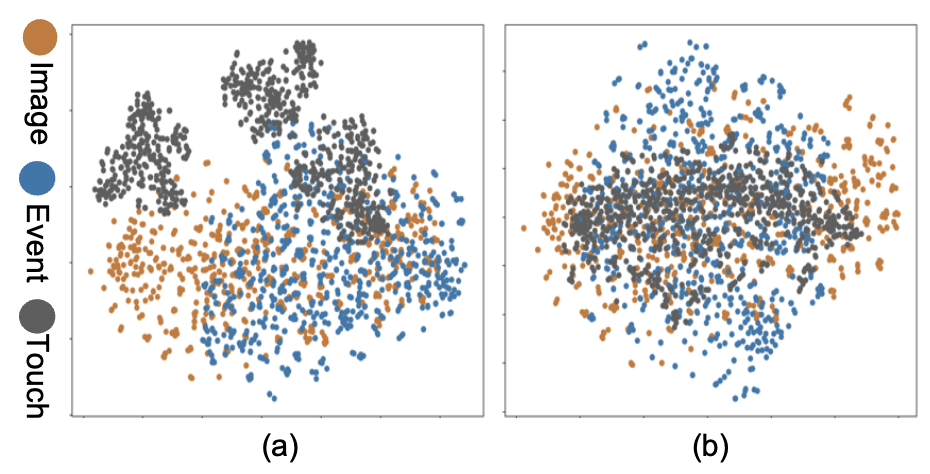

OmniBind: Teach to Build Unequal-Scale Modality Interaction for Omni-Bind of All
-

Yuanhuiyi Lyu
AI Thrust, HKUST(GZ)
-

Xu Zheng
AI Thrust, HKUST(GZ)
-
Dahun Kim
Google DeepMind
-
Addison Lin Wang
AI & CMA Thrust, HKUST(GZ)
Dept. of CSE, HKUST

Abstract
Research on multi-modal learning dominantly aligns the modalities in a unified space at training, and only a single one is taken for prediction at inference. However, for a real machine, e.g., a robot, sensors could be added or removed at any time. Thus, it is crucial to enable the machine to tackle the mismatch and unequal-scale (or data-scale imbalance) problems of modality combinations between training and inference. In this paper, we tackle these problems from a new perspective: "Modalities Help Modalities". Intuitively, we present OmniBind, a novel two-stage learning framework that can achieve any modality combinations and interaction. It involves teaching data-constrained, a.k.a, student, modalities (e.g., touch and thermal) to be aligned with the well-trained data-abundant, a.k.a, teacher, modalities (e.g., image and text). This subtly enables the adaptive fusion of any modalities to build a unified representation space for any combinations. Specifically, we propose Cross-modal Alignment Distillation (CAD) to address the unequal-scale problem between student and teacher modalities and effectively align student modalities into the teacher modalities' representation space in stage one. We then propose an Adaptive Fusion (AF) module to fuse any modality combinations and learn a unified representation space in stage two. To address the mismatch problem, we aggregate existing datasets and combine samples from different modalities by the same semantics. This way, we build the first dataset for training and evaluation that consists of teacher (image, text) and student (touch, thermal, event, point cloud, audio) modalities and enables omni-bind for any of them, e.g., (image, touch, and event). Extensive experiments on the recognition task show performance gains over prior arts by an average of 4.05 % on the arbitrary modality combination setting. It also achieves the state-of-the-art performance for a single modality, e.g., touch, with 4.34 % gain. Dataset and code will be available upon acceptance.
Overall framework of our OmniBind
The overall framework of OmniBind. We propose a two-stage training approach. stage I: Aligning the student modalities via CAD module; stage II: Learning the unified representation space for any modality combination via AF module.

Results with the two-modality combinations.
Results with the combinations of three, four, and five modality.
Results on single-modality setting, including touch, event, and thermal modality.
The t-SNE visualization of representation space. (a) without CAD and (b) with CAD.
BibTeX
@article{,
title={Image Anything: Towards Reasoning-coherent and Training-free Multi-modal Image Generation},
author={Yuanhuiyi Lyu and Xu Zheng and Lin Wang},
journal={arXiv},
year={2024}
}